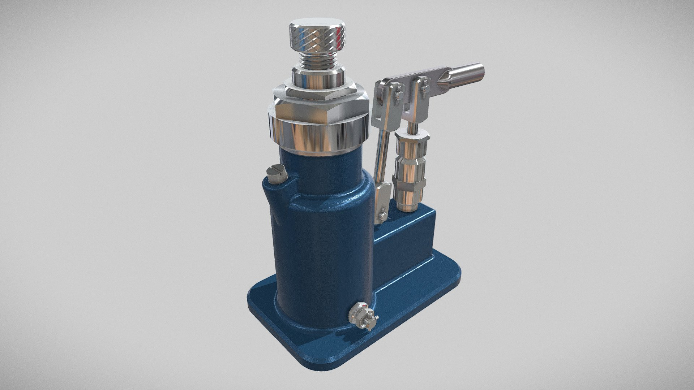
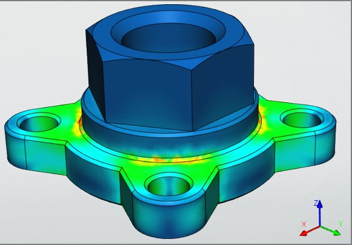
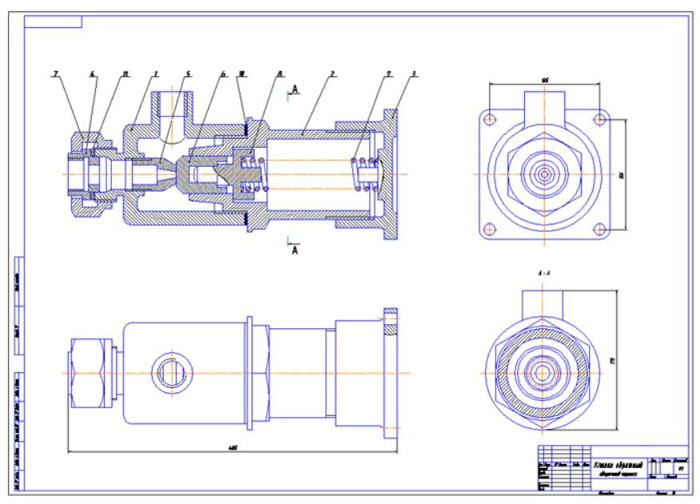
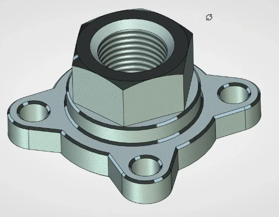
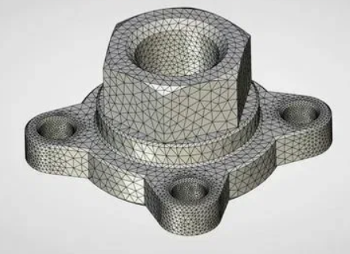

Галерея работ
Здесь представлены примеры моих проектов в области САПР. Каждый проект включает описание задачи, используемые инструменты и ключевые аспекты выполнения. Нажмите на изображение для просмотра в увеличенном виде с возможностью зума и навигации по нескольким фото проекта.

Гидравлический поршень для системы привода
Задача: Разработать гидравлический поршень среднего уровня сложности, аналогичный поршням в двигателях, с фокусом на динамику движения и надежность под давлением.
Выполнение: В T-FLEX проведена параметризация модели с анимацией работы поршня (движение под гидравлическим давлением). Связь между 2D-чертежами и 3D-моделью: параметры из чертежа автоматически обновляют 3D, и наоборот (чертежи всех видов по ЕСКД). Анализ прочности и деформации под нагрузкой для оптимизации.

Соединение втулки в механической системе
Задача: Проектирование соединения втулки с валом для передачи крутящего момента, аналогично элементам в поршневых механизмах, обеспечивая минимальный люфт и долговечность.
Выполнение: В Inventor создана 3D-сборка среднего изделия (несколько деталей). Проведен анализ прочности и деформации элементов под вращательными и осевыми нагрузками (модуль Stress Analysis для оценки напряжений и предотвращения износа).

Клапан с уплотнением для гидравлики
Задача: Создать клапан с уплотнительными элементами, аналогичный клапанам в поршневых системах, для точного контроля потока жидкости без утечек.
Выполнение: В AutoCAD выполнены 2D-чертежи с динамической рамкой и видами в 3 проекциях (основной, сверху, сбоку) и видом с разрезом. Детализация уплотнений и посадочных мест для производства.

Шарнирное соединение для механизма
Задача: Разработать шарнирное соединение среднего уровня сложности, аналогичное подвижным элементам в поршнях, с плавным вращением и устойчивостью к нагрузкам.
Выполнение: В Inventor смоделирована 3D-сборка (среднее изделие с несколькими компонентами). Анализ прочности и деформации под циклическими нагрузками (модуль Simulation для оценки усталости и деформаций).

Листовые детали для корпуса устройства
Задача: Проектирование листовых деталей для корпуса, аналогичного кожухам в поршневых агрегатах, с оптимизацией для штамповки и сварки.
Выполнение: В AutoCAD созданы 2D-чертежи листовых деталей с динамической рамкой и видами в 3 проекциях. Выполнена раскладка для вырезки (оптимизация размещения на листе для минимизации отходов материала).


Втулка с фланцевым соединением
Задача: Создать втулку с фланцем для крепления в системе, аналогичную опорным элементам поршневых механизмов, обеспечивая жесткость и простоту монтажа.
Выполнение: В T-FLEX параметрическая модель с связью 2D/3D (изменение параметров в чертеже обновляет 3D, чертежи по ЕСКД). Анализ прочности и деформации, включая анимацию сборки.